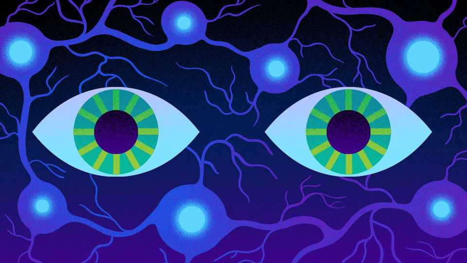

The brain may be about to have its Ozempic moment
Pharma’s newest obsession involves mimicking the system that keeps people awake

Aug 13th 2026
ONE PEPTIDE has recently transformed medicine. Drugs based on glucagon-like peptide-1 (GLP-1), a hormone released by the gut after a meal, began as treatments for diabetes before proving remarkably good at helping people shed weight. They have since shown benefits in the fields of heart disease, kidney disease, sleep apnoea and other ailments. Drugmakers are now betting that two other peptides, the orexins, could follow a similar path for a variety of brain-related ailments.
Orexins are a pair of neurotransmitters—chemicals that carry messages between neurons. One of the main jobs of these particular neurotransmitters is to regulate wakefulness. And a new generation of drugs designed to mimic their effects is approaching the market.
On August 5th America’s drug regulator approved oveporexton, made by Takeda, a Japanese pharmaceutical firm, as the first orexin agonist (ie, molecule that stimulates the same cell-surface receptors) for narcolepsy, a disorder that leaves patients excessively sleepy by day and prone to nod off without warning. Alkermes, an Irish biotech, is developing a competitor. Eli Lilly, whose fortunes GLP-1s have transformed, does not intend to miss another peptide boom. In June it bought Centessa, a biotech with an orexin drug in early trials, in a deal worth up to $7.8bn, depending on the trials’ success. Morgan Stanley, a bank, reckons orexin medicines could generate $16bn a year by 2035 from narcolepsy and related sleep disorders alone. The current crop of narcolepsy drugs, by contrast, have annual sales of some $3bn.
And the excitement is not just about narcolepsy, which is estimated to afflict one person in 2,000 in America. Orexins help co-ordinate sleep, attention, motivation and the brain’s reward system. Drugmakers hope orexin medicines could eventually treat depression, attention-deficit hyperactivity disorder (ADHD) and addiction, conditions that burden hundreds of millions of people.
Orexins were discovered nearly three decades ago by two teams working independently. In January 1998 Luis de Lecea and his colleagues at the Scripps Research Institute in La Jolla, California found the peptides and called them hypocretins. Weeks later a group led by Yanagisawa Masashi, of the University of Texas Southwestern Medical Centre in Dallas, reported that injecting the same peptides into rats’ brains made the animals eat more. They named the molecules orexins, from the Greek orexis, meaning appetite.
Orexins’ true role emerged the following year. Emmanuel Mignot, of Stanford University, was studying hereditary narcolepsy in Doberman pinschers and Labrador retrievers, dog breeds prone to sudden collapse mid-play. He showed that a mutation blocked the brain’s ability to respond to them. That same year, Dr Yanagisawa’s laboratory found that mice engineered to lack orexins repeatedly fell asleep and collapsed. Human confirmation followed: narcoleptic patients had lost the specialised neurons that produce orexins.
These neurons inhabit the hypothalamus, a brain region tucked behind the eyes. Once released, orexins lock, depending on their nature, onto one of two types of cell-surface receptors, OX1R and OX2R, in neighbouring neurons, switching them on. It is OX2R that is important for maintaining wakefulness. Its activation stimulates several wakefulness-promoting systems that rely on other neurotransmitters—norepinephrine, serotonin, dopamine and so on—and keeps them working together, rather like the conductor of an orchestra. OX1R, is more involved with reward and motivation.
Drugmakers first learned how to turn the OX2R conductor off. Orexin antagonists (which block the molecules’ actions rather than mimicking them, and thus promote sleep), have been available since 2014 as treatments for insomnia. They work differently from conventional sleeping pills, which enhance GABA, one of the brain’s main inhibitory neurotransmitters.
Birgitte Kornum, an orexins expert at Copenhagen University, says such pills induce sedation rather than natural sleep and often lose efficacy with continued use. Orexin antagonists instead turn down the brain’s wakefulness signal, letting its sleep-promoting systems take over.
The bigger prize may lie not in blocking orexin’s signal, but restoring it—for many sleep disorders stem from faulty orexin signalling. The immediate application people have in mind is for narcolepsy type 1 (NT1), in which excessive daytime sleepiness is accompanied by cataplexy, a sudden loss of muscle control typically triggered by strong emotion. Further down the line narcolepsy type 2 (NT2), which lacks cataplexy, and idiopathic hypersomnia, a related type of excessive daytime sleepiness, are also in drugmakers’ crosshairs.
NT1 is caused by abnormally low levels of the orexin that binds to OX2R. During REM (rapid eye movement) sleep, the phase when dreams are most intense, the brain paralyses the body to stop it actually acting out movements involved in such dreams. When someone is awake, this paralysis is held in check by norepinephrine and serotonin—two neurotransmitters that orexin sustains. With insufficient orexin, the paralysis circuit may fire even if a person is fully conscious. They might be wide awake, in the middle of a burst of laughter for example, and then lose muscle control and crumple to the floor.
Turning orexins back on is, however, harder than switching them off. An antagonist need only fit into a receptor to prevent an orexin from binding. An agonist must actually reproduce the effect of a peptide many times the drug’s own size. It must also cross the blood-brain barrier, which keeps potentially harmful molecules out of that organ.
Takeda’s first attempt, an agonist called firazorexton, showed early promise, but was discontinued in 2021 after it caused liver damage to several patients. But results published in May 2025 on oveporexton, their follow-up OX2R agonist, created a stir. In an eight-week trial involving 90 patients, volunteers sat in a darkened room to see how long they could stay awake—a procedure called the Maintenance of Wakefulness test. Without oveporexton many fell asleep in a minute or so. On it, they managed to stay awake 12.5 to 25 minutes longer, depending on the dose, pushing many into the normal range. Cataplexy attacks were roughly a third as frequent in those taking the drug, compared with participants on a placebo. Side-effects included insomnia and, in about a third of patients, an uncomfortable urge to urinate.
What makes oveporexton different is not just its effect, but how that effect is achieved. Existing treatments, including stimulants such as methylphenidate and wakefulness-promoting agents such as modafinil, manage symptoms rather than the disease itself. They increase the activity of neurotransmitters such as dopamine and norepinephrine in many parts of the brain. That can improve alertness but may also cause anxiety, elevated blood pressure and poor sleep. Some drugs also carry a risk of addiction.
Orexins work further upstream. Rather than stimulating individual parts of the alertness system, they help bring them into line. Dr Yanagisawa says orexin agonists should produce more natural and stable wakefulness, with fewer side-effects and less potential for abuse than stimulants.
As to NT2 and idiopathic hypersomnia, Lilly’s orexin agonist, acquired through Centessa, is being tested against both of these, as well as NT1. Preliminary data are encouraging, albeit that the sample is small. In a trial of 55 patients the drug improved wakefulness by more than 20 minutes in people with NT1 and by more than ten minutes in those with NT2.
Drugmakers are studying orexin agonists’ effects on more prevalent conditions. Alkermes is testing one in adults for the treatment of ADHD (though current medications are seen as pretty effective), based on the observation that an added benefit in narcolepsy patients is sharpened attention, suggesting they might help with ADHD as well. Others are exploring their use for treating sleep apnoea, which is a far more common disorder.
There are more tantalising ideas, too, about the reward-and-motivation role of the other receptor, OX1R—though the science is less developed. Dr Yanagisawa says blocking OX1R shows promise curbing addictive cravings. Activating the receptor, rather than blocking it, is a more speculative approach, but he believes boosting the orexin signal into the brain’s reward circuitry might help treat some kinds of depression and even enhance motivation.
These are hints, not proof, and will need robust tests before any drug reaches the market. Hunger and sleep, argues Dan Skovronsky, Lilly’s chief scientific officer, are both “master homeostasis mechanisms”—systems that keep the body in balance. When they misbehave, illness follows. The broad usefulness of GLP-1-based medicine has shown what aiming an entire regulatory system can achieve. Drug companies are hoping orexin therapies will have similar success. ■